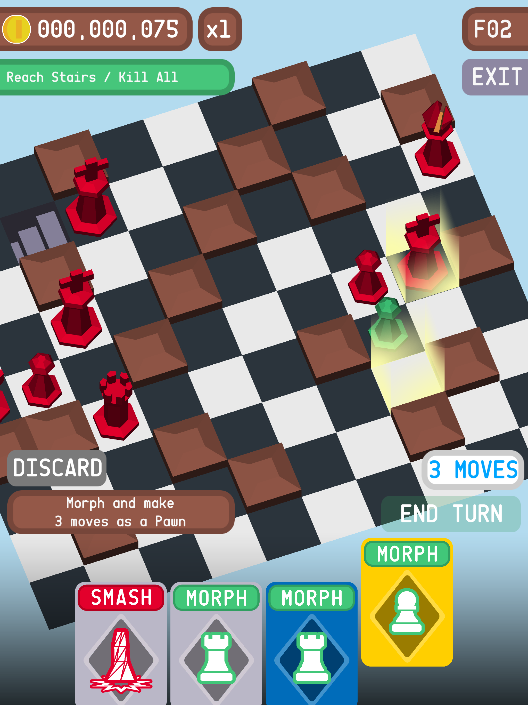

Chessgeon ver2 is an improvement of Chessgeon ver1, unique twist on traditional chess. Chain cards into combos and clear as many dungeon floors as you can!
All AI chess pieces in the game are powered by an A* algorithm, optimised by using binary heaps and hash sets. This A* algorithm can run multiple full searches (bottom left to top right) across a 32x32 grid on mobile without noticeable lag.
The A* also uses a swappable grid system to cater for the five different types of chess piece movements. The Strategy Design Pattern was utilised for this implementation. Each heuristic and neighbour calculation were delegated into the Strategy pattern.
The animations and events systems are all handled by my custom helper tool Daburu Tools which I made as a plugin for Unity for various projects.
You can find the source of the project on my GitHub repository here: https://github.com/raynertanxw/Project-Chessgeon
EDIT: The game is no longer supported and has been retired from the App Store and Google Play Store.